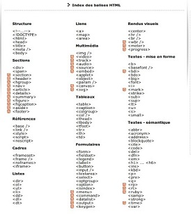

Les balises et leur attributs

Les balises HTML sont des noms d'éléments entourés de crochets
Les balises HTML sont normalement par paires comme p.
Le premier mot - clé dans une paire est la balise de début, le deuxième mot - clé est la balise de
fin
La balise de fin est écrit comme la balise de début, mais avec une barre oblique inséré avant le nom
de la balise
Eléments :
Définissent des objets dans notre page web
L’élément p définit un paragraphe,
Les éléments h1, h2, … , h6 définissent des titres,
L’élément a définit un lien…
Généralement constitués d’une paire de balises :
Les balises en paires
Ces balise sont généralement sous forme et , la première est une balise ouvrante, et la deuxième est une
balise fermante, c'est-à-dire que l’ordinateur va appliquer ce que signifie la balise l’ensemble du
texte inclut entre les deux balise (ouvrante et fermante
Exemple :
* p
* h1, h2 ,h3 ,h4 , h5 , h6
*div
*article
*...
Balises les plus courantes
HTML contient environ 140 balises qui fournissent au navigateur des indications sur le sens d'un élément, son interprétation ou son affichage. Entre autres choses, les balises permettent de fournir des méta-données pour le document HTML, de mettre en avant certaines phrases, d'ajouter des fichiers multimédias ou de gérer des formulaires en ligne.
Voici quelques-unes des balises les plus fréquemment utilisées :
h1,h2,h3,h4,h5,h6
Ces balises permetttent de définir des titres de différents niveaux :
h1 pour les grands titres et
h6 pour les titres des sections très spécifiques.
p
La balise utilisée pour créer des paragraphes. Ces paragraphes sont généralement (automatiquement) séparés par des sauts de ligne.
a
Cette balise est utilisée afin de créer des liens vers des ressources externes : une autre page web, un e-mail, une image, une autre section du document, etc.
Les balises
a contiennent le texte qui sera utilisé pour le lien, l'attribut
href de cet élément est utilisé pour définir l'URL cible


img
Cette balise permet d'intégrer une image dans un document HTML.voici un exepmle:

div et span
Ces balises n'ont pas de signification particulière, elles permettent simplement de séparer des sections d'un document. La plupart du temps, ces balises sont utilisées pour la mise en forme et le script (dont nous discuterons plus tard).
ul, ol et li
Ces balises sont utilisées pour créer des listes.
*ul= permet de définir une liste non-ordonnée
*ol= permet de définir une liste ordonnée. Pour chacune de ces listes
*li= permet de définir un élément de la liste.
Voici un exemple avec ul :